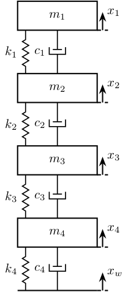
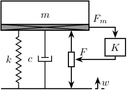
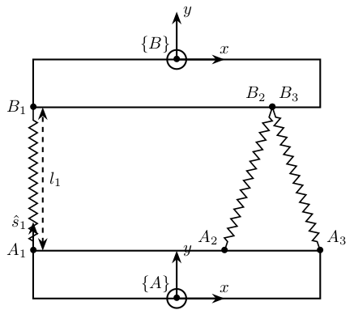
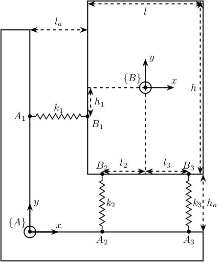
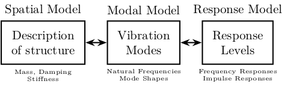

Tikz - Mechanical Systems
Table of Contents
1 Mass-Spring Systems
1.1 One mass
\def\massw{2.2} % Width of the masses \def\massh{0.8} % Height of the masses \def\spaceh{1.4} % Height of the springs/dampers \def\dispw{0.3} % Width of the dashed line for the displacement \def\disph{0.5} % Height of the arrow for the displacements \def\bracs{0.05} % Brace spacing vertically \def\brach{-10pt} % Brace shift horizontaly
\draw (-0.5*\massw, 0) -- (0.5*\massw, 0); \draw[dashed] (0.5*\massw, 0) -- ++(\dispw, 0); \draw[->] (0.5*\massw+0.5*\dispw, 0) -- ++(0, \disph) node[right]{$x_{w}$};
% Mass \draw[fill=white] (-0.5*\massw, \spaceh) rectangle (0.5*\massw, \spaceh+\massh) node[pos=0.5]{$m_{g}$}; % Spring, Damper, and Actuator \draw[spring] (-0.4*\massw, 0) -- (-0.4*\massw, \spaceh) node[midway, left=0.1]{$k_{g}$}; \draw[damper] (0, 0) -- ( 0, \spaceh) node[midway, left=0.2]{$c_{g}$}; \draw[actuator] ( 0.4*\massw, 0) -- ( 0.4*\massw, \spaceh) node[midway, left=0.1](F){$F_{g}$}; % Displacements \draw[dashed] (0.5*\massw, \spaceh) -- ++(\dispw, 0); \draw[->] (0.5*\massw+0.5*\dispw, \spaceh) -- ++(0, \disph) node[right]{$x_{g}$}; % Legend % \draw[decorate, decoration={brace, amplitude=8pt}, xshift=\brach] % % (-0.5*\massw, \bracs) -- (-0.5*\massw, \spaceh+\massh-\bracs) % % node[midway,rotate=90,anchor=south,yshift=10pt]{};

1.2 Two masses
\begin{tikzpicture} % ==================== % Parameters % ==================== \def\massw{2.2} % Width of the masses \def\massh{0.8} % Height of the masses \def\spaceh{1.2} % Height of the springs/dampers \def\dispw{0.3} % Width of the dashed line for the displacement \def\disph{0.5} % Height of the arrow for the displacements \def\bracs{0.05} % Brace spacing vertically \def\brach{-10pt} % Brace shift horizontaly % ==================== % ==================== % Ground % ==================== \draw (-0.5*\massw, 0) -- (0.5*\massw, 0); \draw[dashed] (0.5*\massw, 0) -- ++(\dispw, 0); \draw[->] (0.5*\massw+0.5*\dispw, 0) -- ++(0, \disph) node[right]{$x_{w}$}; % ==================== \begin{scope}[shift={(0, 0)}] % Mass \draw[fill=white] (-0.5*\massw, \spaceh) rectangle (0.5*\massw, \spaceh+\massh) node[pos=0.5]{$m_{g}$}; % Spring, Damper, and Actuator \draw[spring] (-0.4*\massw, 0) -- (-0.4*\massw, \spaceh) node[midway, left=0.1]{$k_{g}$}; \draw[damper] (0, 0) -- ( 0, \spaceh) node[midway, left=0.2]{$c_{g}$}; \draw[actuator] ( 0.4*\massw, 0) -- ( 0.4*\massw, \spaceh) node[midway, left=0.1](F){$F_{g}$}; % Displacements \draw[dashed] (0.5*\massw, \spaceh) -- ++(\dispw, 0); \draw[->] (0.5*\massw+0.5*\dispw, \spaceh) -- ++(0, \disph) node[right]{$x_{g}$}; % Legend % \draw[decorate, decoration={brace, amplitude=8pt}, xshift=\brach] % % (-0.5*\massw, \bracs) -- (-0.5*\massw, \spaceh+\massh-\bracs) % % node[midway,rotate=90,anchor=south,yshift=10pt]{}; \end{scope} \begin{scope}[shift={(0, \spaceh+\massh)}] % Mass \draw[fill=white] (-0.5*\massw, \spaceh) rectangle (0.5*\massw, \spaceh+\massh) node[pos=0.5]{$m_{s}$}; % Spring, Damper, and Actuator \draw[spring] (-0.4*\massw, 0) -- (-0.4*\massw, \spaceh) node[midway, left=0.1]{$k_{s}$}; \draw[damper] (0, 0) -- ( 0, \spaceh) node[midway, left=0.2]{$c_{s}$}; % Displacements \draw[dashed] (0.5*\massw, \spaceh) -- ++(\dispw, 0); \draw[->] (0.5*\massw+0.5*\dispw, \spaceh) -- ++(0, \disph) node[right]{$x_{s}$}; % Legend % \draw[decorate, decoration={brace, amplitude=8pt}, xshift=\brach] % % (-0.5*\massw, \bracs) -- (-0.5*\massw, \spaceh+\massh-\bracs) % % node[midway,rotate=90,anchor=south,yshift=10pt]{}; \end{scope} \end{tikzpicture}

1.3 Three masses
\begin{tikzpicture} % ==================== % Parameters % ==================== \def\massw{2.2} % Width of the masses \def\massh{0.8} % Height of the masses \def\spaceh{1.2} % Height of the springs/dampers \def\dispw{0.3} % Width of the dashed line for the displacement \def\disph{0.5} % Height of the arrow for the displacements \def\bracs{0.05} % Brace spacing vertically \def\brach{-10pt} % Brace shift horizontaly % ==================== % ==================== % Ground % ==================== \draw (-0.5*\massw, 0) -- (0.5*\massw, 0); \draw[dashed] (0.5*\massw, 0) -- ++(\dispw, 0); \draw[->] (0.5*\massw+0.5*\dispw, 0) -- ++(0, \disph) node[right]{$x_{w}$}; % ==================== % Granite \begin{scope}[shift={(0, 0)}] % Mass \draw[fill=white] (-0.5*\massw, \spaceh) rectangle (0.5*\massw, \spaceh+\massh) node[pos=0.5]{$m_{g}$}; % Spring, Damper, and Actuator \draw[spring] (-0.4*\massw, 0) -- (-0.4*\massw, \spaceh) node[midway, left=0.1]{$k_{g}$}; \draw[damper] (0, 0) -- ( 0, \spaceh) node[midway, left=0.2]{$c_{g}$}; \draw[actuator] ( 0.4*\massw, 0) -- ( 0.4*\massw, \spaceh) node[midway, left=0.1](F){$F_{g}$}; % Displacements \draw[dashed] (0.5*\massw, \spaceh) -- ++(\dispw, 0); \draw[->] (0.5*\massw+0.5*\dispw, \spaceh) -- ++(0, \disph) node[right]{$x_{g}$}; % Legend % \draw[decorate, decoration={brace, amplitude=8pt}, xshift=\brach] % % (-0.5*\massw, \bracs) -- (-0.5*\massw, \spaceh+\massh-\bracs) % % node[midway,rotate=90,anchor=south,yshift=10pt]{Support}; \end{scope} % Stages \begin{scope}[shift={(0, \spaceh+\massh)}] % Mass \draw[fill=white] (-0.5*\massw, \spaceh) rectangle (0.5*\massw, \spaceh+\massh) node[pos=0.5]{$m_{s}$}; % Spring, Damper, and Actuator \draw[spring] (-0.4*\massw, 0) -- (-0.4*\massw, \spaceh) node[midway, left=0.1]{$k_{s}$}; \draw[damper] (0, 0) -- ( 0, \spaceh) node[midway, left=0.2]{$c_{s}$}; % Displacements \draw[dashed] (0.5*\massw, \spaceh) -- ++(\dispw, 0); \draw[->] (0.5*\massw+0.5*\dispw, \spaceh) -- ++(0, \disph) node[right]{$x_{s}$}; % Legend % \draw[decorate, decoration={brace, amplitude=8pt}, xshift=\brach] % % (-0.5*\massw, \bracs) -- (-0.5*\massw, \spaceh+\massh-\bracs) % % node[midway,rotate=90,anchor=south,yshift=10pt]{Actuator}; \end{scope} % Hexapod \begin{scope}[shift={(0, 2*(\spaceh+\massh))}] % Mass \draw[fill=white] (-0.5*\massw, \spaceh) rectangle (0.5*\massw, \spaceh+\massh) node[pos=0.5]{$m_{v}$}; % Spring, Damper, and Actuator \draw[spring] (-0.4*\massw, 0) -- (-0.4*\massw, \spaceh) node[midway, left=0.1]{$k_{v}$}; \draw[damper] (0, 0) -- ( 0, \spaceh) node[midway, left=0.2]{$c_{v}$}; % Displacements \draw[dashed] (0.5*\massw, \spaceh) -- ++(\dispw, 0); \draw[->] (0.5*\massw+0.5*\dispw, \spaceh) -- ++(0, \disph) node[right]{$x_{v}$}; % Legend % \draw[decorate, decoration={brace, amplitude=8pt}, xshift=\brach] % % (-0.5*\massw, \bracs) -- (-0.5*\massw, \spaceh+\massh-\bracs) % % node[midway,rotate=90,anchor=south,yshift=10pt]{Flexibility}; \end{scope} \end{tikzpicture}

1.4 Four masses
\begin{tikzpicture} % ==================== % Parameters \def\massw{2.2} % Width of the masses \def\massh{0.8} % Height of the masses \def\spaceh{1.2} % Height of the springs/dampers \def\dispw{0.3} % Width of the dashed line for the displacement \def\disph{0.5} % Height of the arrow for the displacements \def\bracs{0.05} % Brace spacing vertically \def\brach{-10pt} % Brace shift horizontaly % ==================== % Ground \draw (-0.5*\massw, 0) -- (0.5*\massw, 0); \draw[dashed] (0.5*\massw, 0) -- ++(\dispw, 0); \draw[->] (0.5*\massw+0.5*\dispw, 0) -- ++(0, \disph) node[right]{$x_{w}$}; \begin{scope}[shift={(0, 0*(\spaceh+\massh))}] % Mass \draw[fill=white] (-0.5*\massw, \spaceh) rectangle (0.5*\massw, \spaceh+\massh) node[pos=0.5]{$m_4$}; % Spring, Damper, and Actuator \draw[spring] (-0.4*\massw, 0) -- (-0.4*\massw, \spaceh) node[midway, left=0.1]{$k_4$}; \draw[damper] (0, 0) -- ( 0, \spaceh) node[midway, left=0.2]{$c_4$}; % Displacements \draw[dashed] (0.5*\massw, \spaceh) -- ++(\dispw, 0); \draw[->] (0.5*\massw+0.5*\dispw, \spaceh) -- ++(0, \disph) node[right]{$x_4$}; \end{scope} \begin{scope}[shift={(0, 1*(\spaceh+\massh))}] % Mass \draw[fill=white] (-0.5*\massw, \spaceh) rectangle (0.5*\massw, \spaceh+\massh) node[pos=0.5]{$m_3$}; % Spring, Damper, and Actuator \draw[spring] (-0.4*\massw, 0) -- (-0.4*\massw, \spaceh) node[midway, left=0.1]{$k_3$}; \draw[damper] (0, 0) -- ( 0, \spaceh) node[midway, left=0.2]{$c_3$}; % Displacements \draw[dashed] (0.5*\massw, \spaceh) -- ++(\dispw, 0); \draw[->] (0.5*\massw+0.5*\dispw, \spaceh) -- ++(0, \disph) node[right]{$x_3$}; \end{scope} \begin{scope}[shift={(0, 2*(\spaceh+\massh))}] % Mass \draw[fill=white] (-0.5*\massw, \spaceh) rectangle (0.5*\massw, \spaceh+\massh) node[pos=0.5]{$m_2$}; % Spring, Damper, and Actuator \draw[spring] (-0.4*\massw, 0) -- (-0.4*\massw, \spaceh) node[midway, left=0.1]{$k_2$}; \draw[damper] (0, 0) -- ( 0, \spaceh) node[midway, left=0.2]{$c_2$}; % Displacements \draw[dashed] (0.5*\massw, \spaceh) -- ++(\dispw, 0); \draw[->] (0.5*\massw+0.5*\dispw, \spaceh) -- ++(0, \disph) node[right]{$x_2$}; \end{scope} \begin{scope}[shift={(0, 3*(\spaceh+\massh))}] % Mass \draw[fill=white] (-0.5*\massw, \spaceh) rectangle (0.5*\massw, \spaceh+\massh) node[pos=0.5]{$m_1$}; % Spring, Damper, and Actuator \draw[spring] (-0.4*\massw, 0) -- (-0.4*\massw, \spaceh) node[midway, left=0.1]{$k_1$}; \draw[damper] (0, 0) -- ( 0, \spaceh) node[midway, left=0.2]{$c_1$}; % Displacements \draw[dashed] (0.5*\massw, \spaceh) -- ++(\dispw, 0); \draw[->] (0.5*\massw+0.5*\dispw, \spaceh) -- ++(0, \disph) node[right]{$x_1$}; \end{scope} \end{tikzpicture}

2 Control Based on distance measurement
\begin{tikzpicture} % Parameters \def\massw{3} \def\massh{1} \def\spaceh{2} % Ground \draw[] (-0.5*\massw, 0) -- (0.5*\massw, 0); % Mass \draw[] (-0.5*\massw, \spaceh) rectangle (0.5*\massw, \spaceh+\massh) node[pos=0.5](m){$m$}; % Spring, Damper, and Actuator \draw[spring] (-0.3*\massw, 0) -- (-0.3*\massw, \spaceh) node[midway, left=0.1]{$k$}; \draw[damper] ( 0, 0) -- ( 0, \spaceh) node[midway, left=0.3]{$c$}; \draw[actuator] ( 0.3*\massw, 0) -- ( 0.3*\massw, \spaceh) node[midway](F){}; % Displacements \draw[dashed] (0.5*\massw, 0) -- ++(0.2*\massw, 0); \draw[->] (0.6*\massw, 0) -- ++(0, 0.2*\spaceh) node[right]{$w$}; \draw[dashed] (0.5*\massw, \spaceh) -- ++(0.2*\massw, 0); \draw[->] (0.6*\massw, \spaceh) -- ++(0, 0.2*\spaceh) node[right]{$x$}; % Measurement \draw[dashed] (-0.5*\massw, 0) -- ++(-0.2*\massw, 0); \draw[dashed] (-0.5*\massw, \spaceh) -- ++(-0.2*\massw, 0); \draw[dashed, <->] (-0.6*\massw, 0) -- ++(0, \spaceh) node[midway](meas){}; % Noise \node[addb, left=1 of meas] (addn) {}; \draw[->] (meas.center) node[above left]{$d$} -- (addn.east); \draw[<-] (addn.west) -- ++(-0.8, 0) node[above right]{$n$}; % Controller \node[block, above=1 of m] (K) {$K$}; % Reference signal \node[addb] (addr) at (addn|-K){}; \draw[<-] (addr.west) -- ++(-0.8, 0) node[above right]{$r$}; \draw[->] (addn.north) -- (addr.south) node[below left]{$d_m$}; \draw[->] (addr.east) -- (K.west) node[above left]{$\epsilon$}; % Force injected and input noise \node[addb, right=1 of F] (addF) {}; \draw[->] (K.east) -| (addF.north); \draw[->] (addF.west) -- (F.east) node[above right]{$F$}; \draw[<-] (addF.east) -- ++(0.8, 0) node[above left]{$n_i$}; \end{tikzpicture}

3 Inertial Control
\begin{tikzpicture} % Parameters \def\massw{3} \def\massh{1} \def\spaceh{2} % Ground \draw[] (-0.5*\massw, 0) -- (0.5*\massw, 0); % Mass \draw[fill=white] (-0.5*\massw, \spaceh) rectangle (0.5*\massw, \spaceh+\massh) node[pos=0.5](m){$m$}; % Spring, Damper, and Actuator \draw[spring] (-0.3*\massw, 0) -- (-0.3*\massw, \spaceh) node[midway, left=0.1]{$k$}; \draw[damper] ( 0, 0) -- ( 0, \spaceh) node[midway, left=0.3]{$c$}; \draw[actuator] ( 0.3*\massw, 0) -- ( 0.3*\massw, \spaceh) node[midway](F){}; % Displacements \draw[dashed] (0.5*\massw, 0) -- ++(0.2*\massw, 0); \draw[->] (0.6*\massw, 0) -- ++(0, 0.2*\spaceh) node[below right]{$w$}; % Inertial Sensor \node[inertialsensor] (inertials) at (0.5*\massw, \spaceh+\massh){}; \node[block, above right=0.5*\massh and 1 of F.east] (K){$K$}; \draw[->] (inertials.east) node[above right]{$x$} -| (K.north); \draw[->] (K.south) |- (F.east) node[above right]{$F$}; \end{tikzpicture}

4 Force Feedback Control
\begin{tikzpicture} % Parameters \def\massw{3} \def\massh{1} \def\spaceh{2} % Ground \draw[] (-0.5*\massw, 0) -- (0.5*\massw, 0); % Mass \draw[fill=white] (-0.5*\massw, \spaceh) rectangle (0.5*\massw, \spaceh+\massh) node[pos=0.5](m){$m$}; % Spring, Damper, and Actuator \draw[spring] (-0.3*\massw, 0) -- (-0.3*\massw, \spaceh) node[midway, left=0.1]{$k$}; \draw[damper] ( 0, 0) -- ( 0, \spaceh) node[midway, left=0.3]{$c$}; \draw[actuator] ( 0.3*\massw, 0) -- ( 0.3*\massw, \spaceh) node[midway](F){}; % Force Sensor \node[forcesensor={\massw}{0.2}] (fsens) at (0, \spaceh){}; % Displacements \draw[dashed] (0.5*\massw, 0) -- ++(0.2*\massw, 0); \draw[->] (0.6*\massw, 0) -- ++(0, 0.2*\spaceh) node[below right]{$w$}; \node[block={0.7cm}{0.6cm}, above right=0.1*\massh and 1 of F.east] (K){$K$}; \draw[->] (fsens.east) node[above right]{$F_m$} -| (K.north); \draw[->] (K.south) |- (F.east) node[above right]{$F$}; \end{tikzpicture}

5 Inertial Sensor
5.1 1dof geophone or accelerometer

6 3D
6.1 Coriolis Forces
\begin{tikzpicture} \draw[->] (0, 0, 0) -- (4, 0, 0) node[above] {$x$}; \draw[->] (0, 0, 0) -- (0, 4, 0) node[left] {$z$}; \draw[->] (0, 0, 0) -- (0, 0, -4) node[right] {$y$}; \draw[->, style={canvas is zx plane at y=2}] (1, 0) arc (0:270:1) node[left]{$\vv{\Omega_z}$}; \begin{scope}[shift={(4, 3.2, 0)}] \draw (1,0,0)--(1,1,0)--(0,1,0); \draw[dashed] (0,1,0)--(0,0,0)--(1,0,0); \draw (0,0,1)--(1,0,1)--(1,1,1)--(0,1,1)--(0,0,1); \draw[dashed] (0,0,0) -- (0,0,1); \draw (1,0,0) -- (1,0,1); \draw (1,1,0) -- (1,1,1); \draw (0,1,0) -- (0,1,1); \fill[fill=black!10, opacity=0.7] (0,0,1)--(1,0,1)--(1,1,1)--(0,1,1)--cycle; \fill[fill=black!20, opacity=0.7] (1,0,1)--(1,0,0)--(1,1,0)--(1,1,1)--cycle; \draw (0.5, 1, 0) node [above] {Masse $m$}; \draw[->] (0.5, 0.5, 0.5) -- ++(3, 0, 0) node[above]{$\displaystyle\vec{v_x}$}; \draw[->] (0.5, 0.5, 0.5) -- ++(0, 0, 3) node[below right]{$\displaystyle\vv{F_{cor}} = 2 m \vv{v_x} \wedge \vv{\Omega_z}$}; \end{scope} \end{tikzpicture}

6.2 Cube
\begin{tikzpicture} \begin{scope} \fill[fill=black!40, opacity=0.7] (0,0,4) -- (4,0,4) -- (4,4,4) -- (0,4,4) -- cycle; \fill[fill=black!20, opacity=0.7] (4,0,4) -- (4,0,0) -- (4,4,0) -- (4,4,4) -- cycle; \draw (4,0,0)node{$\bullet$} -- (4,4,0)node{$\bullet$} -- (0,4,0)node{$\bullet$}; \draw[dashed] (0,4,0) -- (0,0,0) -- (4,0,0); \draw (0,0,4)node{$\bullet$} -- (4,0,4)node{$\bullet$} -- (4,4,4)node{$\bullet$} -- (0,4,4)node{$\bullet$} -- (0,0,4); \draw[dashed] (0,0,0)node{$\bullet$} -- (0,0,4); \draw (4,0,0) -- (4,0,4); \draw (4,4,0) -- (4,4,4); \draw (0,4,0) -- (0,4,4); \end{scope} \draw[->] (0, 0, 0) -- (0, 0, 2) node[above] {$x$}; \draw[->] (0, 0, 0) -- (2, 0, 0) node[right] {$y$}; \draw[->] (0, 0, 0) -- (0, 2, 0) node[left] {$z$}; \end{tikzpicture}

7 Gravity Compensation System
7.1 Null angle
\begin{tikzpicture} % Parameters definitions \def\baseh{0.2} % Height of the base \def\naceh{0.2} % Height of the nacelle \def\baser{3.8} % Radius of the base \def\nacer{3.0} % Radius of the nacelle \def\armr{0.2} % Radius of the arms \def\basearmborder{0.2} \def\nacearmborder{0.2} \def\xnace{0.0} % X position of the nacelle \def\ynace{2.0} % Y position of the nacelle \def\anace{0.0} % Angle of the nacelle \def\xbase{0.0} % X position of the base \def\ybase{0.0} % Y position of the base \def\abase{0.0} % Angle of the base % Hexapod1 \begin{scope}[shift={(\xbase, \ybase)}, rotate=\abase] % Base \draw[fill=white] (-\baser, 0) rectangle (\baser, \baseh); \coordinate (armbasel) at (-\baser+\basearmborder+\armr, \baseh); \coordinate (armbasec) at (0, \baseh); \coordinate (armbaser) at (\baser-\basearmborder-\armr, \baseh); % Nacelle1 \begin{scope}[shift={(\xnace, \ynace)}, rotate=\anace] \draw[fill=white] (-\nacer, 0) rectangle (\nacer, \naceh); \coordinate (armnacel) at (-\nacer+\nacearmborder+\armr, 0); \coordinate (armnacec) at (0, 0); \coordinate (armnacer) at (\nacer-\nacearmborder-\armr, 0); \end{scope} \draw (armbasec) -- (armnacer); \draw (armbasec) -- (armnacel); \draw (armbasel) -- (armnacel); \draw (armbasel) -- (armnacec); \draw (armbaser) -- (armnacec); \draw (armbaser) -- (armnacer); \draw[fill=white] (-0.5*\nacer, \ynace+\naceh) rectangle coordinate[pos=0.5](massc) (0.5*\nacer, \ynace+\naceh+2); \draw[spring] (0, \baseh) -- node[midway, left=0.1]{$k$} (0, \baseh+\ynace-\naceh) coordinate(stiffnessF); \draw[->, color=colorred] (stiffnessF)node{$\bullet$} -- ++(0, 1) node[below left]{$F$}; \end{scope} \draw[->, color=colorblue] (massc)node{$\bullet$} -- ++(0, -1) node[above right]{$m\vec{g}$}; \end{tikzpicture}

7.2 Maximum angle
\begin{tikzpicture} % Parameters definitions \def\baseh{0.2} % Height of the base \def\naceh{0.2} % Height of the nacelle \def\baser{3.8} % Radius of the base \def\nacer{3.0} % Radius of the nacelle \def\armr{0.2} % Radius of the arms \def\basearmborder{0.2} \def\nacearmborder{0.2} \def\xnace{0.0} % X position of the nacelle \def\ynace{2.0} % Y position of the nacelle \def\anace{0.0} % Angle of the nacelle \def\xbase{0.0} % X position of the base \def\ybase{0.0} % Y position of the base \def\abase{-3.0} % Angle of the base % Hexapod1 \begin{scope}[shift={(\xbase, \ybase)}, rotate=\abase] % Base \draw[fill=white] (-\baser, 0) rectangle (\baser, \baseh); \coordinate (armbasel) at (-\baser+\basearmborder+\armr, \baseh); \coordinate (armbasec) at (0, \baseh); \coordinate (armbaser) at (\baser-\basearmborder-\armr, \baseh); % Nacelle1 \begin{scope}[shift={(\xnace, \ynace)}, rotate=\anace] \draw[fill=white] (-\nacer, 0) rectangle (\nacer, \naceh); \coordinate (armnacel) at (-\nacer+\nacearmborder+\armr, 0); \coordinate (armnacec) at (0, 0); \coordinate (armnacer) at (\nacer-\nacearmborder-\armr, 0); \end{scope} \draw (armbasec) -- (armnacer); \draw (armbasec) -- (armnacel); \draw (armbasel) -- (armnacel); \draw (armbasel) -- (armnacec); \draw (armbaser) -- (armnacec); \draw (armbaser) -- (armnacer); \draw[fill=white] (-0.5*\nacer, \ynace+\naceh) rectangle coordinate[pos=0.5](massc) (0.5*\nacer, \ynace+\naceh+2); \draw[spring] (0, \baseh) -- node[midway, left=0.1]{$k$} (0, \baseh+\ynace-\naceh) coordinate(stiffnessF); \draw[->, color=colorred] (stiffnessF)node{$\bullet$} -- ++(0, 1) node[below left]{$F$}; \end{scope} \draw[->, color=colorblue] (massc)node{$\bullet$} -- ++(0, -1) node[above right]{$m\vec{g}$}; \end{tikzpicture}

8 3Dof System
\begin{tikzpicture} \draw[fill=white] (-3, 0) -- (-3, 1) -- (3, 1) -- (3, 0) -- cycle; \draw[fill=white] (-3, 4) -- (-3, 5) -- (3, 5) -- (3, 4) -- cycle; \coordinate[] (a1) at (-3, 1); \coordinate[] (a2) at ( 1, 1); \coordinate[] (a3) at ( 3, 1); \coordinate[] (b1) at (-3, 4); \coordinate[] (b2) at ( 2, 4); \coordinate[] (b3) at ( 2, 4); \draw[spring] (a1) -- (b1); \draw[spring] (a2) -- (b2); \draw[spring] (a3) -- (b3); \node[] at (a1){$\bullet$}; \node[left] at (a1) {$A_1$}; \node[] at (a2){$\bullet$}; \node[above left] at (a2) {$A_2$}; \node[] at (a3){$\bullet$}; \node[above right] at (a3) {$A_3$}; \node[] at (b1){$\bullet$}; \node[left] at (b1) {$B_1$}; \node[] at (b2){$\bullet$}; \node[above left] at (b2) {$B_2$}; \node[] at (b3){$\bullet$}; \node[above right] at (b3) {$B_3$}; \draw[<->, dashed] ($(a1)+(0.2,0)$) -- node[midway, right]{$l_1$} ($(b1)+(0.2,0)$); \draw[->] (a1) -- ($0.8*(a1)+0.2*(b1)$) node[left]{$\hat{s}_1$}; \begin{scope}[shift={(0,0)}] \draw[->] (0, 0) -- ++(1, 0) node[above]{$x$}; \draw[->] (0, 0) -- ++(0, 1) node[right]{$y$}; \draw[] (0, 0)node[]{$\bullet$} circle [radius=0.2] node[above left]{$\{A\}$}; \end{scope} \begin{scope}[shift={(0,5)}] \draw[->] (0, 0) -- ++(1, 0) node[above]{$x$}; \draw[->] (0, 0) -- ++(0, 1) node[right]{$y$}; \draw[] (0, 0)node[]{$\bullet$} circle [radius=0.2] node[above left]{$\{B\}$}; \end{scope} \end{tikzpicture}

9 3Dof System - bis
\begin{tikzpicture} \draw[fill=white] (-1, -1) -- (-1, 7) -- (0, 7) -- (0, 0) -- (6, 0) -- (6, -1) -- cycle; \draw[->] (0, 0) -- ++(1, 0) node[above]{$x$}; \draw[->] (0, 0) -- ++(0, 1) node[right]{$y$}; \draw[] (0, 0)node[]{$\bullet$} circle [radius=0.2] node[above left]{$\{A\}$}; \begin{scope}[shift={(4,5)}] \draw[fill=white] (-2, -3) rectangle (2, 3); \draw[->] (0, 0) -- ++(1, 0) node[above]{$x$}; \draw[->] (0, 0) -- ++(0, 1) node[right]{$y$}; \draw[] (0, 0)node[]{$\bullet$} circle [radius=0.2] node[above left]{$\{B\}$}; \coordinate[] (b1) at (-2, -1); \coordinate[] (b2) at (-1.5, -3); \coordinate[] (b3) at ( 1.5, -3); \draw[dashed] (0, 0) -- ++(-2, 0); \draw[dashed] (0, 0) -- ++(0, -3); \draw[dashed, <->] (-1.9, 0) -- node[midway,right]{$h_1$} ++(0, -1); \draw[dashed, <->] (0, -2.9) -- node[midway,above]{$l_2$} ++(-1.5, 0); \draw[dashed, <->] (0, -2.9) -- node[midway,above]{$l_3$} ++( 1.5, 0); \draw[dashed, <->] (-2, 2.9) -- node[midway,below]{$l$} (2, 2.9); \draw[dashed, <->] ( 1.9, -3) -- node[midway,left]{$h$} (1.9, 3); \end{scope} \coordinate[] (a1) at (0, 4); \coordinate[] (a2) at (2.5, 0); \coordinate[] (a3) at (5.5, 0); \draw[spring] (a1) -- node[midway, above]{$k_1$} (b1); \draw[spring] (a2) -- node[midway, right]{$k_2$} (b2); \draw[spring] (a3) -- node[midway, right]{$k_3$} (b3); \node[] at (a1){$\bullet$}; \node[left] at (a1) {$A_1$}; \node[] at (a2){$\bullet$}; \node[below] at (a2) {$A_2$}; \node[] at (a3){$\bullet$}; \node[below] at (a3) {$A_3$}; \node[] at (b1){$\bullet$}; \node[below right] at (b1) {$B_1$}; \node[] at (b2){$\bullet$}; \node[above] at (b2) {$B_2$}; \node[] at (b3){$\bullet$}; \node[above] at (b3) {$B_3$}; \draw[<->, dashed] (0, 7) -- node[midway, above]{$l_a$} ++(2, 0); \draw[<->, dashed] (6, 0) -- node[midway, right]{$h_a$} ++(0, 2); % \draw[->] (a1) -- ($0.8*(a1)+0.2*(b1)$) node[left]{$\hat{s}_1$}; \end{tikzpicture}

10 Guiding Errors
\begin{tikzpicture} \tikzset{% guidingpath/.style={% decorate, decoration={random steps,segment length=2.8pt,amplitude=0.8pt} } } \def\massw{1.6} % Width of the masses \def\massh{0.6} % Height of the masses \def\spaceh{1.2} % Height of the springs/dampers \draw[guidingpath] (-2,0) -- (2,0); \draw[dashed] (-2, 3) -- (2, 3); \draw[fill=black] (0, 0.1) circle [radius=0.1]; \draw[] (0, 0.2) -- ++(0, 0.1); \begin{scope}[shift={(0, 0.3)}] \draw[] (-0.5*\massw, 0) -- (0.5*\massw, 0); % Mass \draw[fill=white] (-0.5*\massw, \spaceh) rectangle (0.5*\massw, \spaceh+\massh) node[pos=0.5]{$m$}; \coordinate[] (masstop) at (0, \spaceh+\massh); % Spring, Damper, and Actuator \draw[spring] (-0.3*\massw, 0) -- (-0.3*\massw, \spaceh) node[midway, left=0.1]{$k$}; \draw[damper] ( 0.3*\massw, 0) -- ( 0.3*\massw, \spaceh) node[midway, left=0.2]{$c$}; \end{scope} \draw[dashed, <->] (masstop) -- node[midway, right]{$d$} (0, 3); \draw[dashed, <->] (-2, -0.2) -- node[midway, below]{$x$} (0, -0.2); \end{tikzpicture}

11 Vibration analysis procedure
\begin{tikzpicture} \node[block, inner sep = 8pt, align=center] (1) {Description\\of structure}; \node[block, inner sep = 8pt, align=center, right=0.6 of 1] (2) {Vibration\\Modes}; \node[block, inner sep = 8pt, align=center, right=0.6 of 2] (3) {Response\\Levels}; \draw[<->] (1) -- (2); \draw[<->] (2) -- (3); \node[above] (labelt) at (1.north) {Spatial Model}; \node[] at (2|-labelt) {Modal Model}; \node[] at (3|-labelt) {Response Model}; \node[align = center, font=\tiny, below] (labelb) at (1.south) {Mass, Damping\\Stiffness}; \node[align = center, font=\tiny] at (2|-labelb) {Natural Frequencies\\Mode Shapes}; \node[align = center, font=\tiny] at (3|-labelb) {Frequency Responses\\Impulse Responses}; \end{tikzpicture}
